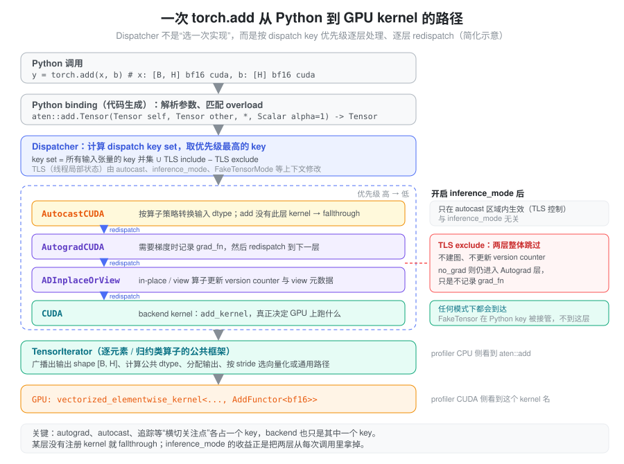
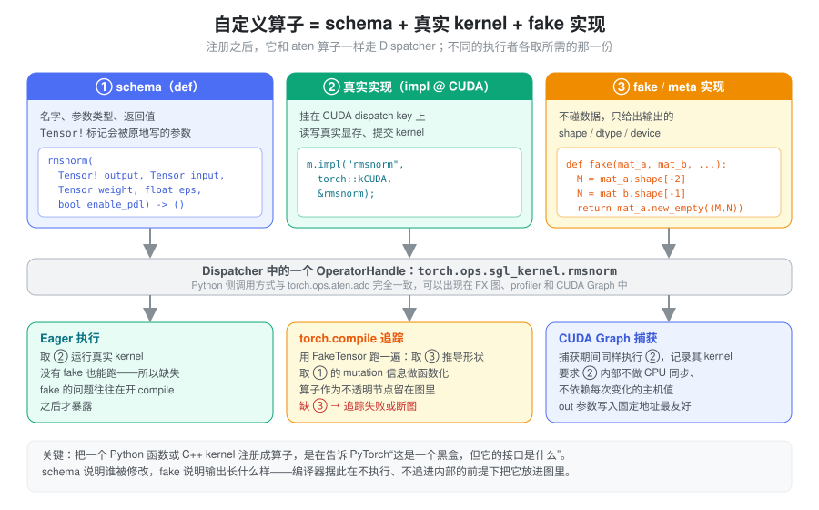

- profiler 里一行
torch.add(x, b)先出现 CPU 侧的aten::add，GPU 侧却是一个叫vectorized_elementwise_kernel<...>的东西，这中间发生了什么？ - 同一个
x + b，在 autocast 里、inference_mode里、torch.compile追踪时，各自走的是同一段代码吗？ - 一个自己写的 CUDA kernel，为什么不能直接从 Python 调用了事，而要“注册成 torch 算子”，还要额外写一个不碰数据的 fake 实现？
这些问题都落在同一个位置：Python 调用与 GPU
kernel 之间的那层调度。
本篇只讲这一层——一次调用如何被识别成哪个算子、经过哪些处理、最终选中哪个实现。融合、torch.compile
的 guard、SDPA 后端选择等“kernel 层”话题见 kernel
与编译执行。
问题：一个算子要同时服务很多“执行者”
add
这个数学运算只有一个，但对它的调用可能来自完全不同的上下文：
- 训练时需要记录反向图（autograd）；推理时希望这部分开销为零；
- autocast 区域内，输入要先按算子策略转换 dtype；
- 张量可能在 CPU、CUDA、其他加速器上，各自需要不同实现；
torch.compile追踪时根本不想算真实数据，只想知道输出的 shape 和 dtype；- vmap、functionalization、tensor 子类等机制也想“插一脚”。
朴素做法是在每个算子实现里写一串
if requires_grad ... if autocast ... if device == cuda ...。PyTorch
有两千多个算子，这样做既无法维护，也让每加一种机制都要改遍所有算子。需要的是一种办法：让这些横切关注点（cross-cutting
concerns）与算子本身的计算解耦，各自独立地挂进去。
抽象：算子是一张按 dispatch key 索引的表
PyTorch 的解法分两步。
第一步，把算子从实现中剥离出来，变成一个有名字、有签名的对象。 每个 ATen 算子由 schema 描述，例如：
aten::add.Tensor(Tensor self, Tensor other, *, Scalar alpha=1) -> Tensoraten 是命名空间，add
是算子名，.Tensor 是 overload
名——同名算子按参数类型区分，add.Scalar、add.out
都是别的 overload。schema 还用 Tensor(a!)
一类标注说明哪个参数被原地修改、输出是否与输入别名。Python
的
torch.add、Tensor.__add__、torch.ops.aten.add.Tensor
最终都落到同一个算子对象上。
第二步，每个算子不是一个函数，而是一张“dispatch key → kernel”的表。 autograd、autocast、CUDA、CPU、Meta 等各是一个 dispatch key，有固定的优先级。每次调用时，Dispatcher 计算本次的 key 集合：
key set = 所有输入张量自带的 key 的并集 ∪ 线程局部 include − 线程局部 exclude张量自带的 key 来自它的 device 和属性（CUDA 张量带
CUDA、AutogradCUDA
等）；线程局部状态（TLS）则由
autocast、inference_mode、FakeTensor mode
这类上下文管理器修改。Dispatcher
取集合中优先级最高的 key 去查表、调用对应
kernel。
关键在于后半句：被调用的那层 kernel 做完自己的事，通常会把自己的 key 排除掉，再 redispatch，于是调用落到下一个 key。整个过程像剥洋葱：

几个直接推论：
- autograd
不是算子内部的逻辑，而是一层包装。
AutogradCUDA层的 kernel 负责记录grad_fn，然后 redispatch；真正的加法在下面的CUDA层。 - 某层不关心某个算子，就注册
fallthrough。 autocast 只为 matmul、conv
等列表内的算子提供 kernel，
add在这一层直接穿过。 - backend 只是众多 key 中的一个。 设备选择与 autograd、autocast 用的是同一套机制，只是优先级最低、离数据最近。
- 新机制可以只加一个 key。 FakeTensor
通过
Pythonkey 截获调用，它的优先级低于 autograd、高于 backend，所以在追踪时仍会经过 autograd 层，但不会进入真实 CUDA kernel。
inference_mode 省掉的就是两层洋葱
有了 key 的视角，no_grad 与
inference_mode
的差别就很具体了（语义层面的区别见 推理模式与状态）：
| 上下文 | Autograd 层 | ADInplaceOrView 层 | 产生的张量 |
|---|---|---|---|
| 默认 | 进入，可能记录 grad_fn |
进入，in-place/view 时维护 version counter 与 view 关系 | 普通张量 |
no_grad |
仍进入，检查 grad mode 后不记录 | 仍进入 | 普通张量 |
inference_mode |
通过 TLS exclude 整体跳过 | 同样跳过 | inference tensor，不带 version counter |
所以 inference_mode
的收益来自每次调用少走两层
kernel、少维护一些元数据；它不改变 backend kernel，GPU
上执行的计算完全相同。在 batch 很小、算子很多的 decode
中，这类 CPU 侧开销才有可能显著；在 GPU 已经满载的 prefill
中通常不明显。
backend 层：一个 op 不等于一个 kernel
调度到 CUDA key
之后，事情还没有结束。backend kernel 内部又分几种情况：
- 逐元素与归约算子走 TensorIterator。 它统一处理广播出输出 shape、按类型提升规则确定计算 dtype、分配输出、合并可以合并的维度，再根据 stride 和对齐情况选择向量化路径或通用的按索引计算路径。所以输入非连续、dtype 混合，并不一定报错，但可能走慢一点的路径或多一次类型转换。广播语义见 广播与索引，类型提升见 dtype 与数值精度。
- 矩阵乘法调用厂商库。
aten::mm、aten::addmm的 CUDA 实现通常转给 cuBLAS / cuBLASLt，profiler 里看到的是sm90_xmma_gemm_...、cutlass_...一类名字，而不是mm。 - 组合算子（composite）由其他算子拼成。
有些 ATen 算子没有自己的 backend
kernel，而是调用其他算子实现，例如
linear会分解为转置与addmm/matmul等。一次 Python 调用于是展开成若干aten::子调用，每个可能各对应零个或多个 kernel。 - 元数据算子没有 kernel。
view、transpose、expand只改 shape/stride（见 张量内存），在 GPU 上什么都不跑；反之.contiguous()、.to()在需要时会悄悄插入aten::copy_。
结论是：Python 一行代码 → 一个或多个 ATen 算子 → 零个、一个或多个 GPU kernel。 估计 GPU 工作量要看 profiler，不能看代码行数。
在 profiler 里认出这条路径
torch.profiler 在 Dispatcher 处埋点，因此
CPU 一侧按算子名嵌套显示，CUDA 一侧是真正的 kernel
名，两者通过 launch 关联。读 trace
时可以把名字当作调度路径的“化石”：
| 看到的名字 | 说明 |
|---|---|
aten::linear 下嵌套
aten::t、aten::addmm |
组合算子在分解；外层的 CPU 时间包含内层 |
aten::to / aten::_to_copy /
aten::copy_ |
发生了 dtype 或设备转换、或为满足布局要求的复制 |
aten::empty /
aten::empty_strided |
分配输出；频繁出现说明中间张量多 |
aten::item /
aten::_local_scalar_dense |
读取设备值到主机，通常意味着同步（见 CUDA 异步执行） |
sgl_kernel::rmsnorm、sglang::... |
自定义算子，和 aten:: 一样经过
Dispatcher |
| CPU 侧有算子、CUDA 侧没有 kernel | 元数据算子，或 kernel 由下层其他算子发出 |
判断 dispatch 开销是否是瓶颈，看的是 GPU kernel
之间的空隙，而不是 aten:: 行的 CPU
耗时本身。CUDA Graph 在 replay 时完全不经过 Python 和
Dispatcher——整条洋葱路径只在 capture
时走一遍，这正是它能消除这部分开销的原因（见 Cuda Graph）。
自定义算子：把黑盒接入调度表
写了一个 CUDA/Triton kernel，用 pybind11 暴露成普通
Python 函数，eager
下当然能跑。问题出在其他“执行者”身上：torch.compile
追踪时会尝试钻进这个函数，遇到 Triton JIT、文件 I/O
或主机端逻辑就断图或失败；就算它不钻进去，也无法知道这个函数的输出
shape、改写了哪个参数，因而无法把它安全地放进图里。
注册成 torch 算子就是给这个黑盒补上一张“调度表条目”，由三部分组成：

- schema：名字和签名。
Tensor!（或 Python 侧的mutates_args）声明哪个参数会被原地写——编译器做 functionalization、判断依赖关系都靠它，写错会导致结果被错误重排或复用。 - 真实实现：挂在
CUDA等 backend key 上，eager 执行和 CUDA Graph 捕获时调用。 - fake 实现：挂在 Meta/Fake
路径上，只根据输入元数据构造输出（通常是
new_empty/empty_like），不读写真实数据。torch.compile用 FakeTensor 追踪时调用它推导 shape，算子本身作为不透明节点留在图里。
接口有三档：C++ 的
TORCH_LIBRARY/TORCH_LIBRARY_FRAGMENT
加 m.def/m.impl；Python 的底层
torch.library.Library 加
define/impl/_register_fake；以及高层的
torch.library.custom_op
装饰器。高层接口会自动处理 autograd、functionalization
等更多 key，便利但每次调用的 Python 侧开销更大。见 Custom
Operators。
在 SGLang 中：两套注册路径
SGLang 同时用了 C++ 和 Python 两种方式（基于当前
python/sglang/ 代码）。
C++ kernel：sgl_kernel
命名空间。
kernels/aot/csrc/common_extension.cc 中的
TORCH_LIBRARY_FRAGMENT(sgl_kernel, m) 逐个注册
kernel，例如：
m.def("rmsnorm(Tensor! output, Tensor input, Tensor weight, float eps, bool enable_pdl) -> ()");
m.impl("rmsnorm", torch::kCUDA, &rmsnorm);schema 用 Tensor! output 和
-> ()
声明这是写入调用方提供的输出缓冲区的算子，只注册了
kCUDA 实现，没有 autograd
公式——它只为推理服务。Python 包装
kernels/aot/python/sgl_kernel/elementwise.py 先
torch.empty_like(input) 分配输出，再调用
torch.ops.sgl_kernel.rmsnorm.default(...)：直接取
.default overload，省去按参数匹配 overload
的步骤。这些 C++ 算子的 fake 实现在 Python 侧按需补上，例如
srt/layers/quantization/fp8_utils.py 用
register_fake_if_exists("sgl_kernel::fp8_scaled_mm")
注册一个只返回
mat_a.new_empty((M, N), dtype=out_dtype)
的函数；register_fake_if_exists（srt/utils/patch_torch.py）在算子不存在时跳过，以适配不同的
kernel 构建。
Python 函数：sglang
命名空间。 srt/utils/common.py 定义了
sglang_lib = Library("sglang", "FRAGMENT") 和
direct_register_custom_op()：用
torch.library.infer_schema 从类型注解推出
schema，define 后把函数直接 impl
到 CUDA key（NPU、XPU、MUSA 上换成对应
key），有 fake 实现时再
_register_fake。源码注释说明了为什么不用
torch.library.custom_op——后者要处理复杂的调度逻辑，开销明显，而直接注册到
backend key 只多一次 Dispatcher 查表。日常使用的是
srt/utils/custom_op.py 里的
@register_custom_op 装饰器，它在内部调用
direct_register_custom_op，并可以根据
out_shape 自动生成 fake（对指定参数
empty_like），原地算子则不需要输出。装饰后返回的是
torch.ops.sglang.<op_name>
本身，所以之后的调用都经过 Dispatcher。
这条路径最重要的用户是
attention。srt/layers/radix_attention.py
中：
@register_custom_op(mutates_args=["output"])
@register_split_op()
def unified_attention_with_output(query, key, value, output, save_kv_cache, layer_id, ...) -> None:attention 的实现依赖运行时的
ForwardBatch、KV cache 索引和后端选择，不适合被
Dynamo 追踪展开。注册成算子后，它在 FX 图里只是一个写入
output 的节点；register_split_op()
再把 sglang.unified_attention_with_output 加入
SPLIT_OPS，compilation/backend.py
的 split_graph()
在这些节点处把图切开，attention
之间的部分分别编译、捕获，形成 piecewise CUDA Graph。对
flashinfer 这类在内部做 JIT
编译或动态加载的外部函数，register_custom_op_from_extern()（同在
custom_op.py）做的是同样的事：把它包成不透明算子，用
fake 实现传播 shape/dtype。
小结
Dispatcher 把“一个算子”变成“一张按 dispatch key
索引的表”：autograd、autocast、追踪、backend
各占一层，每次调用按 key 优先级剥洋葱、逐层
redispatch，最后才落到真正的 kernel，而 backend kernel
本身又可能拆成多个 GPU kernel 或零个。理解了这张表，就能解释
inference_mode 省下了什么、profiler 里的
aten:: 名字意味着什么，以及为什么自定义 kernel
要以“schema + 真实实现 + fake
实现”的形式注册——只有进了这张表，它才能和
torch.compile、CUDA Graph
等其他执行者协作，SGLang 的 sgl_kernel 与
sglang 两个算子命名空间正是这样接入的。